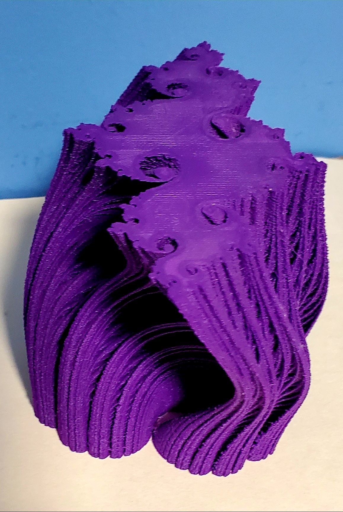
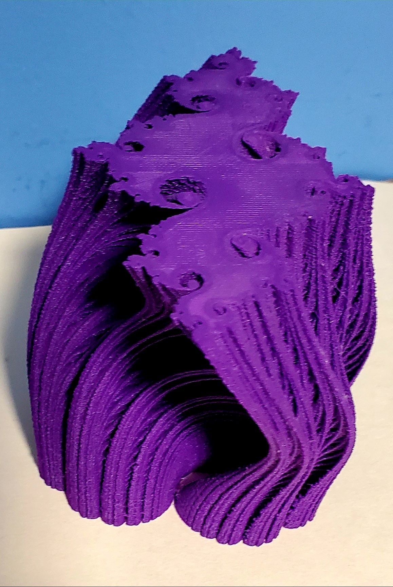

3D Printed Deformations of Julia Set Fractals
In many different disciplines we study how families of mathematical objects vary or deform according a shift in one parameter. If these objects are all two dimensional, one can vary the parameter over time and display how the object changes as an animation. With a 3d printer we can replace the time dimension with the z-axis, stacking each successively deformed layer on the last. This allows us to hold the entire parametrized family of objects in our hands, giving an entire new dimension to the deformation (literally!). I like to call these 'static animations.'
Another experiment with static animation was studying the deformation of the Pythagorean tree fractal. These two peices appear side by side in the AMS book Illustrating Mathematics edited by Diana Davis.
This project follows a workflow developed jointly with Bernat Espigulé. Julia sets are beautiful and popular fractal images. Defining them is actually quite easy: Let c be a complex number, and consider the function f(z) = z2 + c. If I start with a point p in the complex plane, and I iterate f – that is, I consider p, f(p), f(f(p)), f(f(f(p))), ... and so on – one of two things happens: either it gets infinitely large and escapes to infinity, or else at each iteration it stays relatively close to the origin. The points that stay relatively close to the origin are those in the Julia set Jc, which make up these stunning patterns.
It turns out that if you change the constant c just a little bit, the set Jc only changes a little bit as well, but it can change in quite in teresting ways. This project is an exploration of these changes. Given a path through the complex numbers, we stack the Julia sets corresponding to the points in the path to see their deformations in space. If we are at a point c in the path, we print the layer Jc . Then if c' is a point just a little bit further down the path, we print Jc' as the next layer in the print. In this way, we turn a path through the complex numbers into a 3D-printed deformation of Julia sets.
It is known that the Julia set associated to a complex number is connected if and only if c is in the celebrated Mandelbrot Set. It is worth pointing out that one can view the combination of Mandlebrot and Julia sets as a sort of fractal subset of C x C (which is 4 dimensional), and these prints are 3 dimensional slices of this mysterious and beautiful 4 dimensional space.
Below are various paths in C turned into these static animations of Julia sets. If you have other paths you are interested in exploring, get in touch with me and let's try to parametrize it make an STL. I'd be happy to also discuss our share our workflow for developing these objects.
Traversing the upper half of the main cardioid.
 



Leaving the Mandlebrot set into totally disconnected territory!
Exploring near the cusp (approx c = 1/4).
Exploring near the basilica (approx c = -3/4).